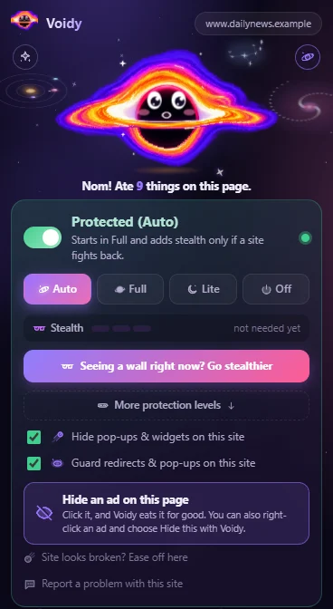
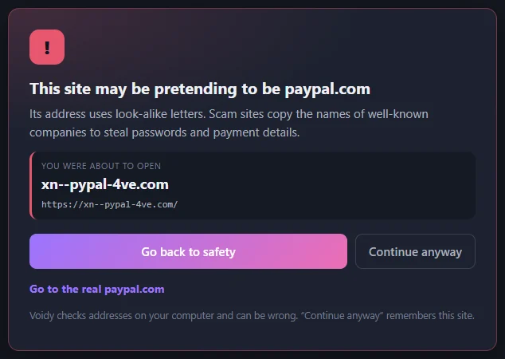
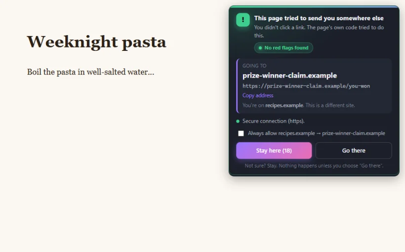
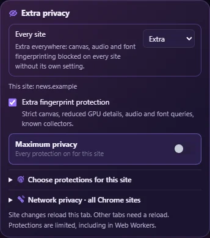
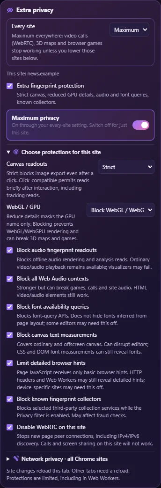
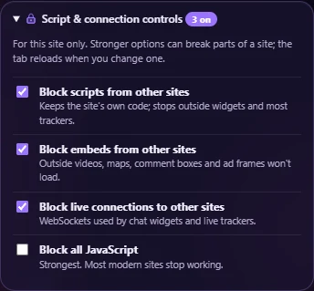
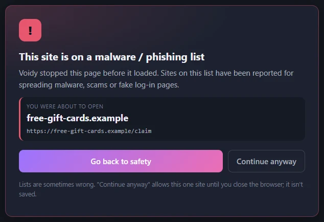
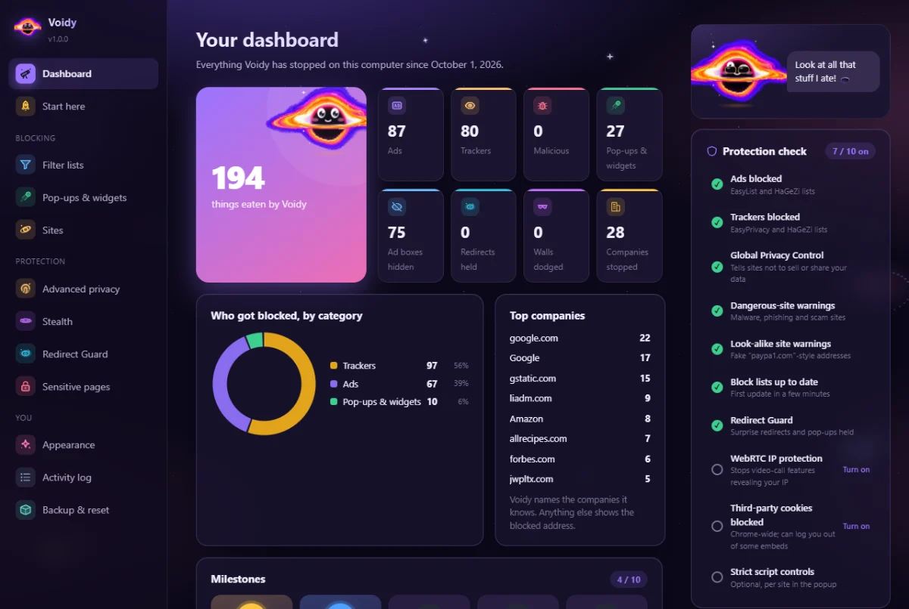
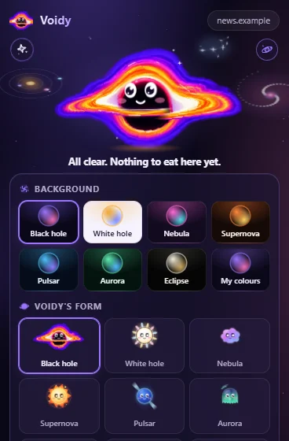

Voidy eats ads.
A free ad blocker for Chrome. It blocks ads, trackers and scam sites before they load, and shows you exactly what it ate.
Version 1.0.0. Free, with no account. Open source under GPL-3.0.
What Voidy blocks
Click the black hole in your toolbar on any site to see what Voidy stopped there, and to change how hard it works on that site.
- Ads
- Banners, video ads and pop-unders, blocked before they download. YouTube videos start without ads, Twitch ad breaks are skipped, and Reddit's promoted posts are hidden.
- Trackers
- Analytics scripts, tracking pixels and the companies that follow you from site to site.
- Dangerous sites
- Malware, phishing and scam sites, plus addresses that imitate a well-known brand.
- Pop-ups and clutter
- Cookie banners (Voidy clicks Reject for you), newsletter pop-ups, chat bubbles and "allow notifications?" prompts.

How it works
Everything happens inside Chrome, on your computer. Voidy steps in at three points while a page loads.
-
The page asks for
tracker.jsVoidy checks the block lists stored on your computer Blocked before it downloads - An empty ad box or a cookie banner appears Voidy matches it against hiding rules Hidden, and the page can scroll again
- The page tries to send you to another site on its own Voidy holds the jump and shows where it goes You choose: stay, or go there
The block lists come from EasyList, EasyPrivacy, HaGeZi and URLhaus, and update themselves. Only the lists are downloaded; nothing about you is sent.
Test results
40 real sites, four setups
We opened the same 40 popular sites (news, recipes, health, tech, games, weather and forums) in a fresh Chrome profile with each blocker, and counted requests that still reached well-known ad and tracking companies. Fewer is better.
Without a blocker, 9,905 requests reached them.
| Blocker | Requests that got through |
|---|---|
| uBlock Origin Lite | 111 |
| Ghostery | 93 |
| Voidy | 8 |
All three hid every visible ad box, and none made a site lose its content. uBlock Origin Lite and Ghostery let some ad scripts load in a harmless form instead of blocking them, and this count includes those.
Public ad-block test sites
Scores as each test site reported them for Voidy with its default settings. Higher is better.
| Test site | Score |
|---|---|
| adblock.turtlecute.org132 of 132 checks blocked | 100% |
| Blockify Adblock Test76 of 79 ad networks blocked | 96% |
| Super Adblock Test456 of 482 checks blocked | 92% |
The checks Voidy leaves unblocked are mostly link redirectors, sign-in services and video players. Blocking those would break links and logins on real sites.
Warnings before scams load


Sites on the malware and phishing lists stop at a warning page before they load. Banks, payment providers and sign-in services are left alone, so checkouts and logins keep working.
Voidy doesn't watch you
Voidy has no account, no servers and no analytics. Your settings and statistics stay in your browser. It only connects to download updated block lists, to fetch a small file of YouTube settings from its GitHub page, and when you click feedback or buy me a coffee.
- Sends the Global Privacy Control signal, which asks sites not to sell or share your data.
- Fingerprinting protection for one site, or for every site you visit, including new ones.
- WebRTC IP protection, so video-call features can't reveal your address.
- Per-site switches that block other sites' scripts, embeds and live connections.


Maximum protection
Turn on Maximum for one site you don't trust, or set Every site to Maximum and every page you open is protected from its first load, including sites you have never visited. Sites you set to Off are left alone, and any single site can be lowered again.
| Protection | What it stops | What can break |
|---|---|---|
| Strict canvas | Sites drawing a hidden image to identify your device | Exporting images from online editors |
| WebGL blocked | Reading your graphics card to identify you | 3D maps and browser games |
| Audio blocked | Identifying you from how your device processes sound | Games and calls in the browser (normal video and audio still play) |
| Fonts hidden | Listing your installed fonts and measuring text | Some online document editors |
| Fewer browser hints | Detailed device and browser version reports | Sites that pick downloads for your device |
| Collectors blocked | Known fingerprinting services | Some fraud checks on shops and banks |
| WebRTC off | Video-call features revealing your IP address | Video calls and screen sharing |
For most people, Every site on Extra is the better everyday choice: it blocks the common fingerprinting tricks and keeps calls and games working. Save Maximum for sites you don't trust.


See everything it stopped
The dashboard shows what Voidy blocked and which companies it stopped, in plain words, and explains what every setting does. This one is from six real sites: a recipe site, two tech sites, a business site, a weather site and a news site.

Make Voidy yours
Voidy is a little black hole with moods. Pick its form, its eyes and an accessory, and a colour theme for the popup and dashboard. It reacts when you poke it, and gets sleepy if you ignore it.
- 9
- forms, from black hole to comet
- 7
- eye styles
- 8
- accessories, from a crown to a sprout
- 7
- colour themes, or pick your own two colours

Everything else Voidy does
Blocking
- Four modes per site: Auto, Full, Lite and Off
- Stealth 1 to 3 for sites that refuse to work with an ad blocker
- Block lists that update themselves, daily for dangerous sites
- A blocked count on the toolbar icon
Clean-up
- Hide any ad yourself: right-click it and choose Hide this with Voidy
- Notification prompts allowed only right after you click
- Un-freezes pages that stay locked after a pop-up is removed
- Each site has its own pop-ups and widgets switch
Safety
- Catches invisible links laid over the page
- Asks before a link opens an app on your computer
- Blocks tabs that swap themselves behind a pop-up
- "Always allow" for jumps between sites you trust
Control
- One click eases off on a site that looks broken
- An activity log of every decision, in plain words
- Backup and restore your settings as one file
- Report a problem: copies a short, site-names-only report
What Voidy can't do
No ad blocker catches every ad, and YouTube changes its tricks often, so an ad can slip through now and then. Some sites detect ad blockers; Voidy's Stealth modes fool many of them, but not all. If a site breaks, one click in the popup eases off on that site only.
Free, and it stays free
There is no paid tier and nothing locked. Voidy is made by one person, and the code is open for anyone to read.